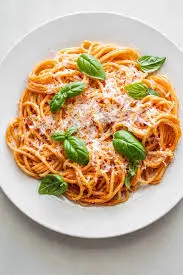

Pasta Pomodoro

Recept
Ingredienser
Instruktioner
- Skär tomaterna i små bitar.
- Hacka löken och vitlöken fint.
- Hetta upp olivoljan i en stor stekpanna.
- Fräs lök och vitlök tills de är mjuka.
- Tillsätt tomatpurén och låt den fräsa i 2 minuter.
- Häll i de hackade tomaterna och låt dem koka ihop.
- Krydda med salt, peppar, oregano och chiliflakes.
- Häll i det vita vinet och låt det reducera något.
- Koka spaghettin enligt anvisningarna på förpackningen.
- Tillsätt en skvätt pastavatten till såsen.
- Blanda i smöret för extra smak och glans.
- Rör ner basilikan precis innan servering.
- Lägg upp spaghettin och häll över såsen.
- Strö över parmesan.